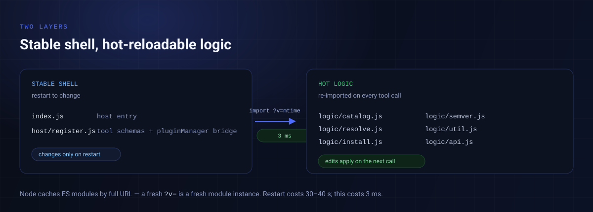

结构
host/register.js 每次调用计算 logic/ 下最大 mtime，以 import('./logic/api.js?v=<mtime>') 导入；逻辑模块之间用同一个 ?v= 传递依赖。Node 的 ESM 缓存按完整 URL 计，所以：
- 改
logic/任何文件，下一次工具调用立即生效，不用重启宿主（实测 2–5 ms，重启约 30–40 s）。 - 只有改工具定义层（
index.js/host/register.js）才需要重启。
这是为没有 HMR 的打包运行环境设计的：宿主拿不到真 HMR 所需的 Node 内部模块加载器，但重新 import 一个带新 query 的模块完全可行。
